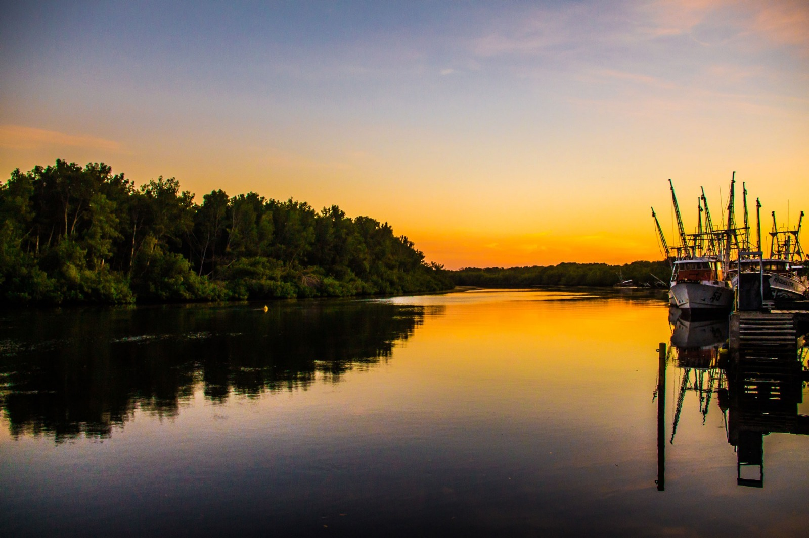
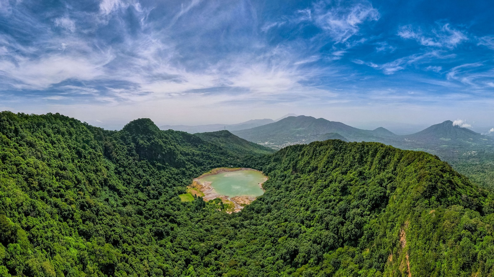

Bahía de Jiquilisco Reserva de biosfera reconocida por sus manglares y biodiversidad. Es un espacio importante para la conservación ambiental y el turismo ecológico.

Laguna de Alegría Destino de clima fresco con una laguna ubicada en el cráter de un volcán. Es apreciado por sus paisajes y producción artesanal.